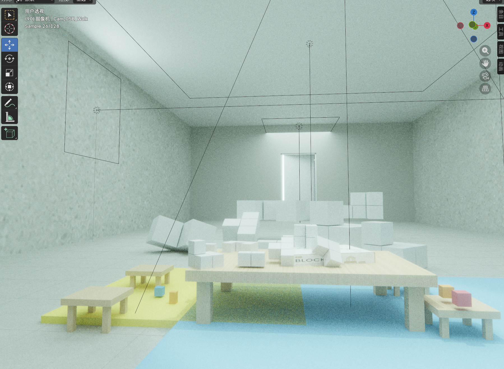

VR · UX Research · Social Design
Space Rights
空间权利
A VR spatial experience that reveals the invisible labor of cleaners and logistics workers through immersive, first-person storytelling.
Background
Public spaces — malls, universities, transit stations — are maintained by a largely invisible workforce. Cleaners and logistics staff occupy these spaces daily yet are systematically excluded from the social interactions and resting spaces available to other occupants.
Space Rights asks: what happens when you inhabit someone else's relationship to a space? Can VR create genuine empathy where signage and statistics cannot?
Research
The research phase combined ethnographic observation with spatial analysis. Key findings:
- Cleaning staff spend 70%+ of their shift in "back-of-house" or transitional spaces not designed for human comfort
- Rest areas, when they exist, are often positioned in basement corridors, away from natural light and social activity
- Most users of public spaces have never considered the logistics of how those spaces are maintained
- Visual and spatial cues constantly signal to workers that they should be invisible
Interviews
Five in-depth interviews were conducted with cleaning and logistics staff at a university campus. Participants described:
- Being asked to move carts and equipment out of sight when students arrived
- Eating lunch in stairwells because the cafeteria "wasn't for them"
- Feeling pride in their work alongside a persistent sense of being unwelcome
These testimonies became the narrative backbone of the VR experience.
Questionnaire
A survey of 120 students and faculty measured awareness of and attitudes toward support staff in shared spaces. Key data:
- Only 14% reported ever having a conversation with a cleaning staff member in the past month
- 68% said they had never thought about where cleaning staff ate lunch
- After a brief narrative prompt, 87% expressed they would want to change this
This awareness gap confirmed the need for an experience that creates visceral, not just intellectual, understanding.
Design Concept
The VR experience places the player in the body of a cleaner navigating a university campus across a single workday. Environmental design highlights spatial exclusion through:
- Restricted zones — areas that appear open to others are blocked or watched for the player
- Sound design — ambient conversations stop or shift when the player enters certain areas
- Object interaction — only cleaning tools are interactable; decorative and social items are locked
- Dialogue fragments — overheard conversations that range from indifferent to patronizing
VR Experience

Built in Unreal Engine 5 with spatial audio and haptic feedback. The experience runs approximately 18 minutes and ends with a reflective debrief scene where the player can revisit moments and hear extended testimonies from research participants.
Reflection
Space Rights was the project that most clearly connected UX design to social purpose for me. Designing for empathy requires a different kind of rigor: less about flow efficiency and more about discomfort as a feature.
The most effective design decision was making the player wait — idle animations that mirror the wasted time of workers forced to pause while spaces are "cleared" for others. Stillness as data.
This work has informed how I think about inclusive design in all contexts: who is this space (or interface) optimized for, and who does that optimization exclude?